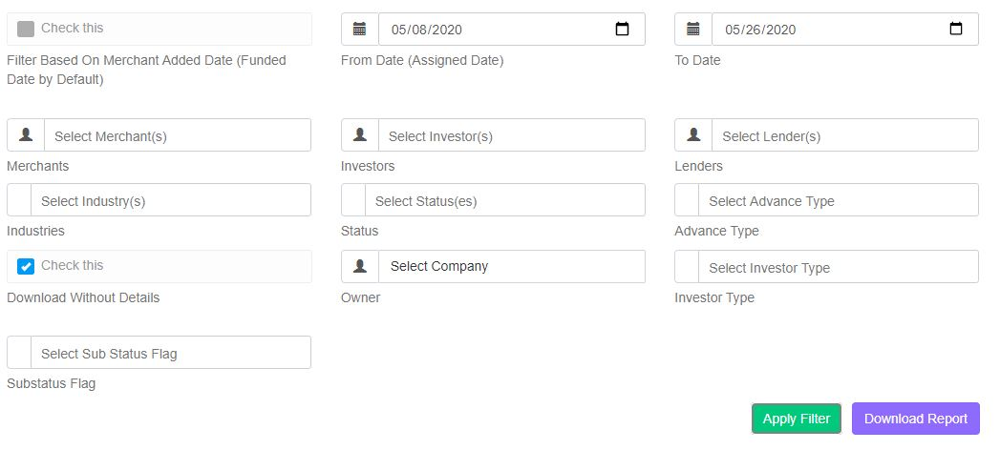
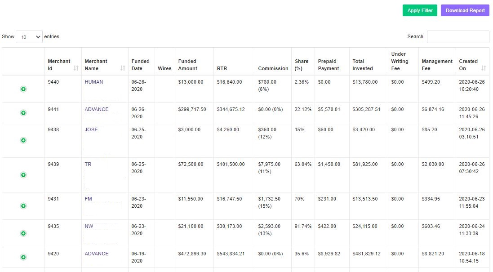

Admin Reports
The Reports Menu section provides an overall tabulation of the query result, depending on the filters provided. It has quite a few sub-menus. Each sub-menu item has been explored in details below.
Default Rate
This report gives the Default Rate for Investors. This can be filtered according to the different parameters as shown below:
- We have been given a selection of Merchants. This can be used to view only the selected Merchants. Here multiple selections are possible.
- We also have been given a selection of Lenders. This can be used to view only the selected Lenders. Here too, multiple selections are possible.
- Velocity Option also has been given for selection.
- Selection based on Industries, Status, Owner are also available.
- We can give a starting date and an ending date, From Date to To Date, of the report you would like to view.
- An option for downloading the report is also given.
After making the required filter selections, we get the report according to it. A sample has shown as below:
Net Zero, Default Amount, Default Amount(RTR), Default Rate, Default Rate(RTR) are enumerated here.
Default Rate(Merchant)
This report gives the Default Rate particularly for Merchants. This can be filtered according to the different parameters as shown below:
- We have been given a selection of Investors. This can be used to view only the selected Investors. Here multiple selections are possible.
- We also have been given a selection of Company. This can be used to view only the selected Company under the investor. Here too, multiple selections are possible.
- Status is another option that is a querying criteria. There are various categories under this section depending on which the results are tabulated.
- We can give a starting date and an ending date, From Date to To Date, of the report you would like to view.
- An option for downloading the report is also given.
After making the required filter selections, we get the report according to it. A sample has shown as below:

The Default Date, Default Invested Amount, Default RTR is displayed against each queried Merchants' Name
Delinquent Report
This report gives the Delinquent Report particularly for Merchants. This can be filtered according to the different parameters as shown below:
After making the required filter selections, we get the report according to it. A sample has shown as below:
Last Payment Date, Total Invested Net amount paid Principal Paid Profit Paid Principal less Principal Paid Principal less Principal & Profit Paid Lender Industry are displayed against each queried Merchants.
Payment Left Report
This report gives the report of the remaining Payments for each merchant. This can be filtered according to the different parameters as shown below:
- We have been given a selection of Merchants, Lenders and Company, along with Status and Last Payment Date. This can be used to view only the selected Merchants. Here, multiple selections are possible for all filter options.
- An option for downloading the report is also given.
After making the required filter selections, we get the report according to it. A sample has shown as below:
- The report table gives the name of the Merchant, corresponding Gross RTR, Payment Amount, Over Payment, Total Payments, RTR/Payment Amount and Payments Left.
Lender Delinquent Report
This report gives the report of the remaining Payments for each Lender. This can be filtered according to the different parameters as shown below:
- We have been given a selection of Merchants, Lenders and Company, along with Status and Last Payment Date. This can be used to view only the selected Merchants. Here, multiple selections are possible for all filter options.
- An option for downloading the report is also given.
After making the required filter selections, we get the report according to it. A sample has shown as below:
- The report table gives the name of the corresponding Lender, Invested Amount, Percentage of Share, Default Invested Amount, Profit made on CTD, Percentage of the Default Amount
Profitability Report(65/20/15)
This report gives the overall view of division of Profit according to the specified percentage. This can be filtered according to the different parameters as shown below:
- We have been given a selection of From Date and To Date. Option to fier according to Funding Date has also been provided.
After making the required filter selections, we get the report according to it. A sample has shown as below:
- The report table gives the name of the corresponding Investor Name, CTD, Total Profit, Bills, Preferred Return, Default, Net Profit, 65% Velocity, 20% To Investor and 15% Pactolus of profits.
Profitability Report(50/30/20)
This report gives the overall view of division of Profit according to the specified percentage. This can be filtered according to the different parameters as shown below:
- We have been given a selection of From Date and To Date. Option to fier according to Funding Date has also been provided.
After making the required filter selections, we get the report according to it. A sample has shown as below:
- The report table gives the name of the corresponding Investor Name, CTD, Total Profit, Bills, Preferred Return, Default, Net Profit, 50% Velocity, 30% To Investor and 20% Pactolus of profits.
Profitability Report(50/30/20) - 2021
This report gives the overall view of division of Profit according to the specified percentage. This can be filtered according to the different parameters as shown below:
- We have been given a selection of From Date and To Date. Option to fier according to Funding Date has also been provided.
After making the required filter selections, we get the report according to it. A sample has shown as below:
- The report table gives the name of the corresponding Investor Name, CTD, Total Profit, Bills, Preferred Return, Default, Net Profit, 50% Velocity, 30% To Investor and 20% Pactolus of profits for the year 2021.
Profitability Report(50/50)
This report gives the overall view of division of Profit according to the specified percentage. This can be filtered according to the different parameters as shown below:
- We have been given a selection of From Date and To Date. Option to fier according to Funding Date has also been provided.
After making the required filter selections, we get the report according to it. A sample has shown as below:
- The report table gives the name of the corresponding Investor Name, CTD, Total Profit, Bills, Preferred Return, Default, Net Profit, 50% share each of profit.
Investment Report
This report gives the Investor’s Investment Summary. This can be filtered according to the different parameters.
The First Screen looks as given in the image below:
- The first filter is a Check Box. It needs to be checked in case we want to filter based on the date the merchant was added (Funded Date by Default). When this box is checked, we are given an option for entering the From Date To Date and From Time To Time. Accordingly the queried result will be displayed.
- The second and the third filter is the date selector, From Date to To Date, of the report you would like to view.
- We have been given a selection of Merchants. This can be used to view only the selected Merchants. Here multiple selection is possible.
- We have been given a selection of Investors. This can be used to view only the transactions of the selected Investors. Here also, multiple selection is possible.
- We also have been given a selection of Lenders. This can be used to view only the selected Lenders. Here too, multiple selection is possible.
- Selection based on Industries, Status, Owner are also available.
- An option for downloading the report is also given.
All care has been taken to make the platform user-friendly and easy to segregate the details that is most required by you.
After making the required filter selections, we get the report according to it. A sample has shown as below:
Each Merchant Details can be expanded and individual transactions can also be viewed, as below:
Merchant Id, Merchant Name, Funded Date, Wires, Funded Amount, RTR, Commission, Share (%), Prepaid Payment, Total Invested, Under Writing Fee, Management Fee are displayed against each queried Merchants's Name.
Investor Assignment
Investor Assignment Report gives the tabulation of investors who have been assigned for the funding each merchants. Along with this we can also find the Participant Amount, Liquidity and Date. This can be filtered according to the different parameters as shown below:
- We have been given a selection of Assigned Date, To Date, Merchants and Investors. Here, multiple selections are possible for all filter options.
- An option for downloading the report is also given.
After making the required filter selections, we get the report according to it. A sample has shown as below:
- The report table gives the name of the corresponding Investor, Merchant, Participant Amount, Liquidity and Date.
- There is a Undo Reassign Button. Clicking on this would mean that you want to Undo the last assigned Investor.
Investor Re-Assignment
Investor Re-Assignment Report gives the tabulation of investors who have been re-assigned for the funding each merchants. This can be filtered according to the different parameters as shown below:
- We have been given a selection of Assigned Date, To Date, Merchants and Investors. Here, multiple selections are possible for all filter options.
- An option for downloading the report is also given.
After making the required filter selections, we get the report according to it. A sample has shown as below:
- The report table gives the name of the corresponding Merchant, Investor From, Investor To, Amount, Liquidity Change, Investor1 Final Liquidity, Investor2 Final Liquidity, Date and Action
Liquidity
This report gives the details of each investor. This can be filtered according to the different parameters as shown below:
- We have been given a selection of Date, Company and Liquidity. An option to select All/Enabled/Disabled Investors have been added. Here, multiple selections are possible for all filter options.
- An option for downloading the report is also given.
After making the required filter selections, we get the report according to it. A sample has shown as below:
- The report table gives corresponding Investor, CTD, Credits Commission, Funded Amount, Prepaid Amount, Liquidity and Underwriting Fee. Overall, it gives the total Investment Liquidity of each Investor.
Payment Report
This report gives the details of Payment of Merchants. This can be filtered according to the different parameters as shown below:
- We have been given a selection of Merchants, Lenders, Investors, Payment Type, Status, Advance Type, Owner, Investor Type and Rcode(flag option for payment failed at least once). Here, multiple selections are possible for all filter options.
- We can also filter based on Payment Added Date(Payment Date by Dafault), based on Overpayment and also date(from and to).
- Another option to include Report Totals has been provided.
- Option to download is present. A checkbox has been provided to be able to download without details.
- Payment Method Filter added to Payment Report. Options to filter are ACH, Manual and Credit Card.
- Payout Frequency Filter added to Payment Report. Multi-options have been provided, such as, Weekly, Monthly, Daily and On Demand.
- Syndication Report Download button now displayed for downloading the report.
After making the required filter selections, we get the report according to it. A sample has shown as below:
- The report table gives corresponding Merchant, its Funded Date, Merchant Id, Debited, Total Payments, Management Fee, Net Amount, Principal, Profit Last R code, Last Payment Date, Last Payment Amount, Participant RTR, Net Zero Balance and Participant RTR Balance.
- For RCode filter, a Select All button button has been added which gets all available RCodes
- A provision to expand each Merchant is present, as shown in the figure below:
- Participant, Date, Merchant ID, Debited Amount, Participant Share, Management fees, Net Amount and RCode are tabulated here.
- All Participant names are clickable and onClick we are taken to the respective Participant's Portfolio page.
Revenue Recognition Report
- This report gives the details of Recognition of Revenue coming Under Velocity. This can be filtered according to date, as shown above:
- We need to select the date and export.
Transaction Report
All the transactions that have taken place in a given period of time is displayed in this report. This can be filtered according to the different parameters as shown below:
- We have been given a selection of Investors, Transaction Type and Transaction Categories. Here, multiple selections are possible for all filter options except the Investor Type filter.
- We can also filter based on Date of Transaction.
- Option to download is present.
After making the required filter selections, we get the report according to it. A sample has shown as below:
- The report table gives Investor Name, Transaction Category, Transaction Type, Amount, Investment Date, Maturity Date and Last Updated date and time.
- A provision to view each Investor has been provided, as shown in the figures below:
Accrued ROI Report
All the transactions that have taken place in a given period of time is displayed in this report. This can be filtered according to the different parameters as shown below:
- We have been given a selection of Investors, Transaction Type and Transaction Categories. Here, multiple selections are possible for all filter options except the Investor Type filter.
- We can also filter based on Date of Transaction.
- Option to download is present.
After making the required filter selections, we get the report according to it. A sample has shown as below:
- The report table gives Investor Name, Transaction Category, Transaction Type, Amount, Investment Date, Maturity Date and Last Updated date and time.
- View button added in Accrued ROI Report - to view the ROI details of each individual Investor
Debt Investor Report
This report mainly targets those Investors who have been assigned an Investor Type of Debt.
- We have been given a selection of Investors only as filter.
- The report table gives the Investor Name, Principal Investment, Three Month ROI, Principal + ROI and Current Balance.
Equity Investor Report
This report mainly targets those Investors who have been assigned an Investor Type of Equity. We have been given a selection of Investors only as filter as shown below:
- The report table gives Investor Name, Credit Amount, Portfolio Value, Velocity Profit and Investor Profit.
Total Portfolio Earnings Report
This report tabulates the overall Portfolio Values of the all Investor, as shown below:
- The report table gives Investor Name, Credited Amount, Total Portfolio Earnings, Bills Distributions and Portfolio Value.
- A link has been provided for each Investor to view the portfolio details of that particular Investor.
Total Portfolio Earnings Report
This report tabulates the overall Portfolio Values of the all Investor, as shown below:
- The report table gives Investor Name, Credited Amount, Total Portfolio Earnings, Bills Distributions and Portfolio Value.
- A link has been provided for each Investor to view the portfolio details of that particular Investor.
Overpayment Report
This report tabulates the Overpayment amount of a merchant, as shown below:
- The report table gives Merchant Name, Overpayment Amount and Total RTR.
- A link has been provided for each Merchant to view the details of that particular Merchant.
Merchant Per Diff Report
This report tabulates the Merchant Percentage Differences of a merchant, as shown below:
- The report table gives Merchant Id, VP investment, Vp Payment, Difference in Percentage, Velocity Investment and Velocity Payment.
- This provides the difference between the payback amount and the actuated paid amount, represented as a percentage of the payback amount.
Velocity Profitability Report
This report tabulates the Velocity Profitability.
- We can filter and query the database, as shown below:
- The report table gives Merchant Name, Origination Fee, Up Sell Commission, Flat Under Writing Fee, Syndication Fee, Management Fee, Under Writing Fee and Funded Date.